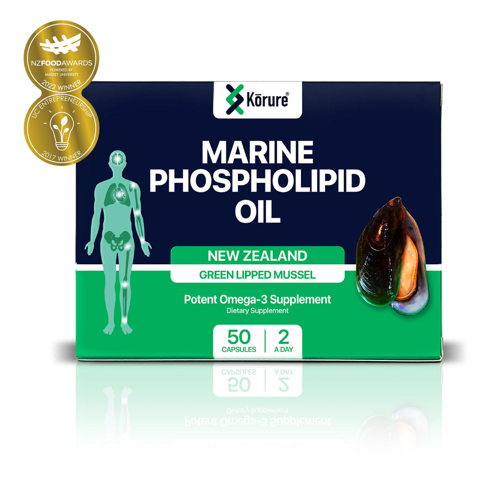
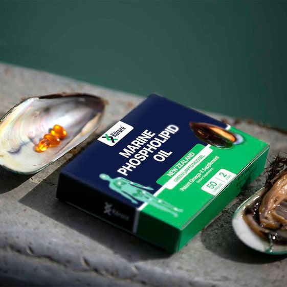
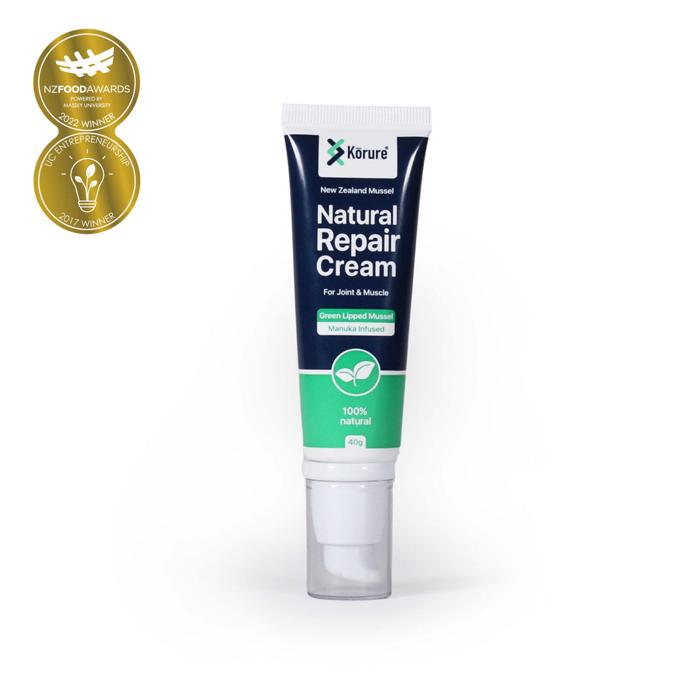
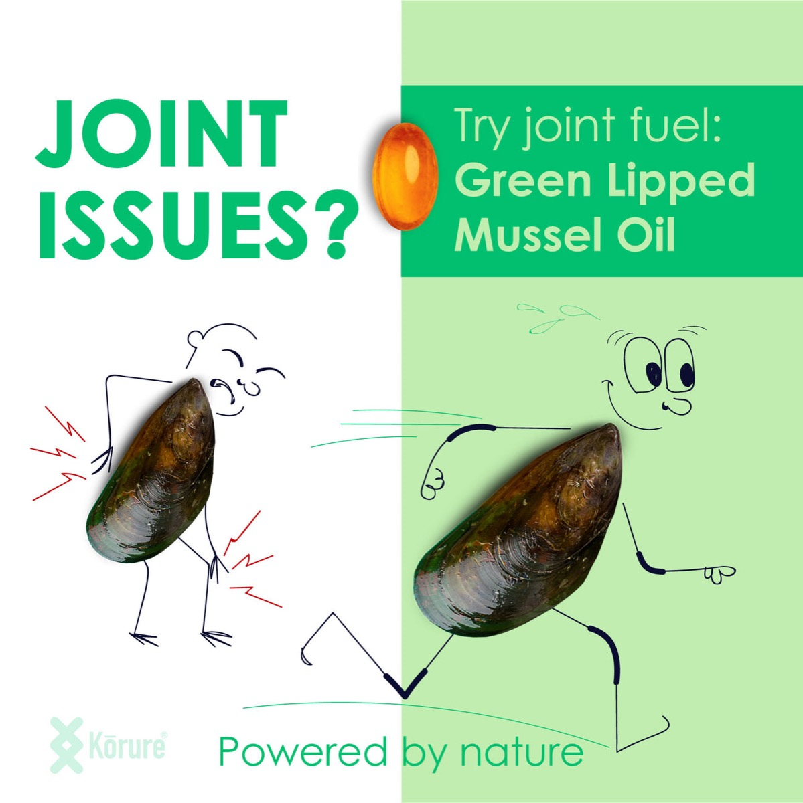

100% Natural · New Zealand Made
Natural joint care powered by New Zealand green-lipped mussel. Ease stiffness, move freely, and get back to the life you love — without the synthetics.

🏆 Award-winningFind your fix
Natural, New Zealand-made support — for joints, recovery and everyday wellbeing.

Why green-lipped mussel
New Zealand's green-lipped mussel is one of the richest natural sources of marine omega-3s. Our cold-pressed marine phospholipid oil delivers them in the form your body absorbs best — to calm inflammation and keep you moving.
Feel the difference
Real, natural support you can feel — so you can keep doing more of what you love.
Marine omega-3 helps ease everyday stiffness and support mobility.
Naturally soothes aches so you can recover and keep going.
Bounce back quicker after movement, sport or a big day.
Kiwi prebiotic and whole-food nutrition for everyday wellbeing.
No synthetics, no nasties — just clean New Zealand ingredients.
Responsibly harvested from New Zealand's pristine waters.
Loved by New Zealanders

The Korure ritual
A simple daily routine. Most people feel the difference within a month — or your money back.
Two MP Oil capsules with breakfast — pure green-lipped mussel omega-3.
Massage Natural Repair Cream into stiff joints and tired muscles.
Stay consistent for 30 days and get back to moving freely.
Real stories
★★★★★ 4.8 / 5 · 2,400+ verified reviews
"My knees had stopped me tramping for years. Three weeks on MP Oil and I'm back on the trails. Genuinely life-changing."
"The repair cream is magic on my hands after gardening. Natural, no chemical smell, and it actually works."
"As a physio I'm fussy about what I recommend. Korure's green-lipped mussel oil is the real deal for joint health."
"I take the algae oil as I'm vegan — finally a clean omega-3 that helps my joints without fish."
"Did the 30-day challenge expecting nothing. By week four my morning stiffness was basically gone. Hooked."
"Love that it's NZ-made and 100% natural. Kiwi prebiotic sorted my gut too. Whole family uses Korure now."
Reviews shown are illustrative mockup content.
From Aotearoa, with care
Our green-lipped mussels are responsibly harvested from the clean, cold waters of New Zealand and cold-processed to protect their natural omega-3s. Family-founded, award-winning, and 100% natural — the way nature intended.

Join the Korure whānau for natural wellness tips and members-only offers.